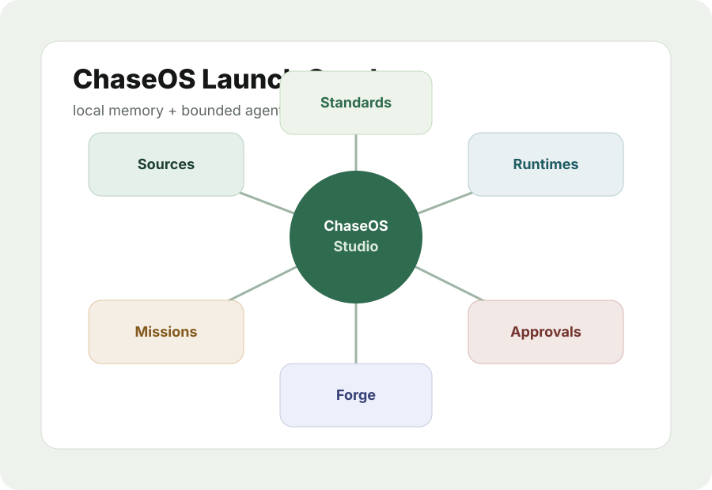

ChaseOS Studio
The desktop command surface for local memory, projects, sources, graph views, approvals, runtime awareness, and workflow packs.
Human intent. Agentic execution. Private control.
ChaseOS turns scattered AI chats, docs, repos, sources, runtimes, browser workflows, approvals, and outputs into one governed knowledge graph.

The desktop command surface for local memory, projects, sources, graph views, approvals, runtime awareness, and workflow packs.
Sources, decisions, outputs, workflows, approvals, runtime activity, and logs stay connected instead of scattered across tools.
Runtimes operate through declared permissions, visible status, approval gates, and audit trails. No silent external actions.
Ready/preview: local-first memory, Source Intelligence Core, bounded AOR workflows, Studio surfaces, approval visibility, workflow/mission packs, Forge static preview, and draft standards.
Blocked/future: marketplace checkout, hosted runtime operation, unbounded browser operation, external posting, customer-system writes, billing-system writes, and enterprise deployment readiness.